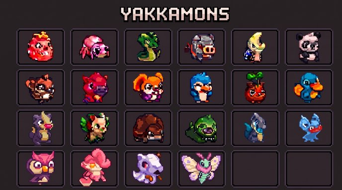

The Unofficial Yakkamon Player Portal
The full field guide — every mechanic we know about, explained so anyone can follow it. Built from the official docs, the dev streams, and the official screenshots. Prefer it split by system? →
▶ Prefer to watch? Gameplay explained in 4 minutes ↗The short version: it's a farming game where the monsters do the farming — and your job is to go catch better ones.
The name is thought to come from yakka, the Australian word for hard work. That is the whole idea: your monsters don't only fight, they hold down jobs.
THE SHAPE OF IT
Half of Yakkamon plays itself. Half of it needs you — and each half feeds the other.
Your monsters farm, gather and produce around the clock. Set them up, walk away, come back to progress. This keeps running even when the game is closed, so you log back in to a pile of stuff waiting for you.
You go out hunting rare creatures, craft your gear, and fight other trainers in the arena. This only moves when you're actually playing — and better hunts feed a better farm.
Your farm is a slow cooker that keeps going all night. Hunting is the trip to the shops for better ingredients.
THE ENGINE
Six things you do over and over. Every system in the game bolts onto this circle.
It's a snowball. Small team, small resources, small upgrades, slightly bigger team. Do that twenty times and you have an empire.
THE ROSTER
Expect roughly 50–60 species at launch — and four separate things decide whether one individual is worth keeping.

Type decides what it can gather. A Grass type gathers Wood. A Fire type can't — the game refuses outright. Thirteen types at launch, one per monster; dual types come later.
Every monster rolls slightly different stats. Two of the same species won't be identical, so it's worth hunting the same one again for a better roll.
Rares sit in tiers, and certain rares are more powerful than other rares in the same tier.
Every monster carries a boost. Legendaries have a named one; Rares and Uncommons roll theirs at random, separately from their stats — so great stats and a great utility on one monster is the jackpot. No wearable gear exists to make up the difference.
The second dev stream filled in the machinery underneath: monsters have real genetics and base stats, traits are randomly rolled and define your build, and there are breeding lines with degradation but no hard cap, with evolutions planned. The team put roll predictability at roughly 80–90%.
Think trading cards. Same picture on the front, better numbers on the back — and that's the one everybody wants.
THE TIERS
Two corrections from 21 August that reframe the whole roster.
Every individual of a species shares its tier. There is no rare version of a common monster and no legendary variant of an ordinary one. Grinding commons hoping for a lucky upgrade roll is not a strategy that exists.
The best commons beat middling rares and roughly match a low-end legendary on raw stat outlay. What rarity buys is a higher ceiling as the monster levels, scarcer utility, and traits no other tier can access.
Legendary — pre-minted, fixed scarce supply, minted as NFTs, exclusive traits. Rare — time or event limited, issued as SFTs, supply set by how hard players hunt. Common — plain game assets with no token behind them.
Hunting is the primary route at every tier. Rares can appear in any hunt; legendaries lean on events, specific conditions and tournament wins.
| Legendary | Supply | Utility | Airdrop ranks |
|---|---|---|---|
| 🌩 Storm | 75 | Stormcharged — Yakkamon within range work 2× as fast (large AOE) | 1–50 |
| ⬜ Echo | 275 | Yakkamon within range produce double resources (small AOE) | 1–3, 51–250 |
| 👻 Ghost | 400 | Unsleeping — always at maximum stamina on the farm (small AOE) | 4–10, 251–500 |
| 🌸 Bloom | 2,000 | Regenerates a % of Max HP every combat turn | 501–2,000 |
Small touches only the job the monster stands on — assign it to a tree and the two or three trees beside it get the effect. Large covers a whole section of the farm and every Yakkamon working there.
Some utilities are additive, some are multiplicative with each other. Storm + Echo is the confirmed combo: twice the speed on top of double the output.
No utility is listed for them because each one is randomly rolled at generation, independently of species and stats. Keepers are the ones that rolled both well.
The utilities are descriptive text. Radii, percentages and every Rare/Uncommon utility are still being balanced — and will be, the team says, right up to release.
A first-team squad player can outperform a benched international. The badge tells you the ceiling, not the current form.
THE RULE THAT MATTERS MOST
Every resource can only be gathered by the right type, so your roster decides what you're able to gather at all.
| Resource | Who can gather it | Status |
|---|---|---|
| Wood | Grass types | CONFIRMED |
| Wood | Fire types — blocked. In-game message: “Fire type cannot harvest wood!” | BLOCKED |
| Stone | Type not yet announced | UNKNOWN |
| Berries / crops | Type not yet announced | UNKNOWN |
| Region materials | Each Region has its own resources and its own monster types — the Water Region is the named example | MAPPING TBC |
The consequence is worth sitting with: collecting more species literally unlocks more of the map's materials. A narrow roster caps what you can produce no matter how well you play.
You wouldn't ask a fish to chop firewood. Same rule — except here the game enforces it.
THE ENGINE ROOM
Gathering runs on a repeating work-and-rest cycle that keeps going without you.
A monster that's asleep isn't broken, it's recharging. There are two ways to raise output: level them up, since higher levels make them more efficient farmers, and collect more of them, since that unlocks more resource types and lets you gather several at once.
Each monster is a little worker with a battery. Work drains it, sleep charges it, and it clocks back on without being told.
THE NEW SINK
Your farm wears out as you use it — a resource sink that does not exist in Sunflower Land.
The job card carries a degradation marker. The example shown read degraded 1.6× — that plot farms more slowly until you refertilise it.
So upkeep is a permanent drag on production rather than a cosmetic status. Bryn was clear the intent is not to punish going wide, but the cost is real.
Degradation comes from use, not absence. Log off for a month and your Yakkamon fill the bins, then stop and wait: “no decay, no neglect feature, no punitive system for not logging in”. The only cost of being away is the output you didn't bank.
Growing tiles come in groups of three, and upkeep scales more slowly than production does. Filling out a group beats spreading thin — invest deep, not wide.
A vegetable patch, not a vending machine. Crop the same soil forever and yields drop until you feed it.
WHERE THE LOOT GOES
Gathered resources pile into a bin that keeps filling while you're gone — until it fills up and stops.
Resources don't go straight to your bag. They stack in a storage bin that keeps filling on its own, even while you're offline, until you tap it to collect the haul into your inventory.
The catch: bins have a cap. Once a bin hits MAX it stops accepting, and every hour it spends full is production you never banked. That turns bin capacity and how often you check in into a genuine strategic variable — the difference between a farm that runs all night and one that quietly stops at 2am.
A piggy bank that fills itself. Once it's full, extra coins bounce off the top — so empty it before it overflows.
UPKEEP
Your monsters have needs, and a monster that needs something isn't earning.
Status icons float above a Yakkamon when something's up, and a notification feed calls it out by name — screenshots show messages in the form of “[name] is Hungry”.
Needs feeding before it will carry on.
Injured or knocked out, and out of action until treated.
Recovering stamina. Not broken — it restarts itself.
Can ask directly with a speech bubble, e.g. a stone icon with a “!”.
An item bar sits along the bottom of the screen for exactly this — milk, flowers, mushrooms, a health item and more, ready to use on whoever's struggling. Because a monster in a bad state stops producing, upkeep is part of the economy rather than flavour.
They're pets with jobs. Feed them, patch them up, let them nap — and they keep earning for you.
THE STACKING RULE
A short rule with large consequences for how you build a roster.
Two monsters both carrying “Wood Gatherer I” give you the effect once. Stacking duplicates of your best monster achieves nothing.
“Wood Gatherer” alongside “Extreme Wood Gatherer” is two separate effects, and both apply.
Stated plainly: kill the reason to hoard copies, and create a strong reason to collect a broad array of monsters with different skills so you can layer boosts on one activity.
Wide, not deep. One excellent specialist per job beats five copies of your best one — and combined with type locking, that is now the clearest planning rule available.
Two identical umbrellas keep you exactly as dry as one. An umbrella and a raincoat is the upgrade.
THE LONG GAME
Where the team expects the deepest optimisation to live — on a one-to-three-year horizon.
Breed two strong individuals of the same species and their good stats and traits propagate, letting you aim a line at a specific result.
Bred Yakkamon are tradable, so there is a cap to stop inflation: commons breed above replacement, rarer species around it, and some Legendaries may breed only once. Offspring can breed, but their own count can narrow further. Random noise still creeps in the more you breed from one individual.
One RNG component plus one fixed component, and explicitly no RNG stacked on RNG. You should be able to build a best/worst case before committing.
Combining ten commons into one rare was rejected as tonally wrong. Evolutions are confirmed but not launching with the game — the team wants to solve the supply problem (everyone evolving up and piling at the top tier) first.
Pedigree breeding. You can keep going back to the same champion, but the litters get scruffier each time.
HOME
The place they all work from — and the doorway out into the wild.
Each tile carries a resource price right on the button — the starter one reads 10 Wood + 1 Stone. A tile can hold resource nodes, room for workstations and plots, or a hunting area, and every tile raises how much you can run at once.
Workbenches with their own storage counters, a workshop marked with an axe, houses with beds for sleeping monsters, crop plots and rock nodes.
A dedicated zone with an entry cost shown on the sign — 5 berries in the launch screenshot. This is your doorway from farming into hunting.
The menu buttons you'll live in: Squad (your active team), Items, Quests, Shop, Trade (the player market) and Log (notification history).
A workshop yard. More space means more benches — and more benches mean more gets made at once.
THE WORLD
A clock, weather, seasons — and a world that opens up in three layers: tiles, Regions, Chapters.
A clock runs in the corner with a sun or moon icon, and what you find in the wild changes with it.
Separate weather indicators sit next to the clock — sunshine and rain are both shown in the HUD.
Seasons change the world around you, and each Region shifts along with them.
Grasslands, deserts, volcanoes, fire regions and a Water Region, each with its own resources and its own monster types.
The world has its own little day that runs faster than yours. Nobody gets a head start on sunrise.
GETTING STRONGER
Gear is how you reach the rare stuff — and the gear is built from what your ordinary monsters gathered.
You refine gathered resources into the gear and items you need. That gear is what lets you track down and capture rarer, tougher monsters.
Hunting is a job you assign, not a place you walk to — same top-down view as the farm. The Yakkamon you send in rolls for a wild monster, and resources tilt the odds.
Three shown so far (a rocky outcrop among them), with swamps and water areas to come. Send a monster to snoop around one area to skew toward that type, or let it wander and take pot luck.
A rock-type lure draws rock types. Recipes turn your gathered resources into lures and baits — and into the materials your farm needs to expand.
A red alert on the ground means something wants to fight you. Most of the ground pauses and waits for your move — this is where hunting hands off to combat.
Skittish, they never alert you. Send your hunter over with bait, watch a short emoji conversation, and see whether it joins or runs.
No limit on hunts per Yakkamon. The hunting ground itself is what runs dry: the more it's hunted out, the lower its chance of producing anything.
A contract system requests specific Yakkamon and pays in coins — one of the few faucets for the currency that gates the tradable economy.
Crafting is the thing to watch, because it's what actually gates progress. Raw gathering scales easily once you have a roster; what limits most players is turning that pile into the specific items a harder hunt needs.
You need a better fishing rod to catch the big fish — and you build the rod out of what the small fish helped you collect.
THE ARENA FLOOR
Lane-based 3v3 auto-battling. Your skill shows up in the team you built, not the buttons you press.
Monsters hold assigned lanes and act top to bottom — lane one, then two, then three, every round. You set positions before the fight; AOE attacks keep positioning relevant.
Each monster cycles through two to three abilities in a preset order. The move list is visible in advance, which creates the core tension: type advantage versus skill-loop advantage.
Decided at the end of August: it is not a pure simulation. Players influence combat through “mechanic swapping”, on an architecture built to flex once player feedback starts. What the action looks like hasn't been shown.
A coin flip — unless a lane holds the type advantage, which overrides everything. Fire attacking grass goes first, full stop. Lane one is where a disadvantage hurts most.
Three to five rounds typically, under a minute. But deliberate wide variance — the “average” fight is meant to be under 40% of all fights.
Battles run on an animation timer you can accelerate. Full skipping likely won’t ship, because real-time interaction mechanics are in testing.
The intended route is to find a monster with the skill you want and extract it onto another. Buildcraft is meant to come from breeding, not from hot-swapping loadouts before every fight.
MMR confirmed. No meaningful rewards below an MMR cutoff — that is where weak human players sit, and it makes the low end worthless to bots. Better bots get flagged by event tracking.
You’re a manager, not a player. Pick the squad and the formation, then watch from the touchline.
WHAT IT'S ALL FOR
The arena, your gym, an on-chain market, and the quests and events running alongside. For how a fight actually resolves, see the battle system.
You face other players in PvP arena combat and build your own gym. Since rarity and stat rolls both affect power, the team you build on the farm is the team you fight with.
Every core resource and creature is tradable on-chain, with a Trade button in the main menu. Two valid ways to build an empire: grind it, or trade your way there.
The free-to-play layer produces without limit but can't be traded. Making something tradable costs coins, and coins only come from VIP, burning assets or crops, and contract hunts — so the gate between the tracks is the whole economic design.
Quests appear in a feed with names like “Capture the Spikemon”, and timed events run on a countdown with a milestone bar filling toward marked rewards.
The farm is practice, the arena is the match — and the market is there if you'd rather buy a good player than raise one.
THE LONG RUN
Infinite levels, chapter releases, and a meta the team expects to move without intervening.
Plans and sinks are meant to ship at launch; the endgame features themselves arrive after early access once the core has been tested.
Early: gathering and hunting specialists are the valuable monsters, because throughput funds everything else. Later: once the arena and tournaments establish, demand shifts toward battle-stat monsters.
Producer versus fighter is meant to emerge from opportunity cost rather than an enforced limit. Top-end players will comfortably do both.
Mistakes get worn and fixed. Inflation is attacked with hard sinks and new content that absorbs old — the pattern Sunflower Land shipped as an infinite XP sink.
A long-running league rather than a season that wipes. The table never resets — they just keep adding divisions.
THE HARD NUMBERS
Every figure the team or the screenshots have actually shown, with where each one came from.
| Thing | Value | Source |
|---|---|---|
| Yakkamon at launch | 50–60 species, rest arrive per chapter | Dev statement |
| Battle format | Lane-based 3v3 auto-battler | 21 Aug stream |
| Typical battle length | 3–5 rounds, under a minute | 21 Aug stream |
| Battle variance target | The “average” fight is under 40% of all fights | 21 Aug stream |
| Skills per monster | Around 2 under consideration, plus passives | 21 Aug stream |
| Boost stacking | Same name doesn’t stack; different name does | 21 Aug stream |
| Rarity assignment | Set at species level — no rare variants of commons | 21 Aug stream |
| Types at launch | 13, one type per Yakkamon; dual types later | Free-mint stream |
| Wearable gear | None — possibly one held item | Free-mint stream |
| Genesis Legendary supply | Storm 75 · Echo 275 · Ghost 400 · Bloom 2,000 (Rare 4,000, Uncommon 15,000) | Yakkapedia (official docs) |
| Legendary utilities | Storm: in-range work 2× as fast (large AOE) · Echo: in-range double resources (small AOE) · Ghost: in-range always at max stamina (small AOE) · Bloom: regenerates % Max HP per combat turn | Yakkapedia (official docs) |
| Small vs large AOE | Small = the job it stands on and the 2–3 nodes beside it; large = a whole section of the farm | Free-mint stream |
| Utility stacking | Additive and multiplicative combinations exist — Storm + Echo confirmed | Free-mint stream |
| Rare / Uncommon utilities | Randomly rolled at generation, independent of stats | Free-mint stream |
| Legendaries in the free mint | 68 of 10,000 — 3 Storm, 5 Echo, 10 Ghost, 50 Bloom (plus 50 Rare) | Official docs |
| Active Yakkamon cap | None — as many as you have jobs for | Free-mint stream |
| Being away | Pauses — bins fill, jobs stop, no decay, no neglect penalty | Free-mint stream |
| Storage bins | Now one bin per resource | Free-mint stream |
| Plot degradation example | 1.6× slower until refertilised | Job card screenshot |
| Time split the team is aiming at | Roughly 50/50 or 30/30/30 farm / combat / market | 21 Aug stream |
| Starter storage bin | Cap of 20 | Early-game screenshot |
| Later storage bin | Cap of 120, shows “MAX” when full | UI mock-up |
| Expansion unit | Tiles, unlocked with gathered resources; each raises how much you can run at once | Regions post (28 Aug) |
| First land expansion | 10 Wood + 1 Stone | Early-game screenshot |
| What a tile can hold | Resource nodes, build space, or a hunting area | Regions post (28 Aug) |
| Hunting Area entry | 5 berries | Early-game screenshot |
| New Regions | Unlocked by growing your starting Region; each has its own resources and monster types | Regions post (28 Aug) |
| Named Regions so far | Grasslands (starter, from the Updates panel); Water Region (official post) | Updates panel + Regions post |
| Old Regions | Stay active — you manage every Region you have unlocked at once | Regions post (28 Aug) |
| Cross-Region resources | Moved and shared between Regions — “the real puzzle”; mechanic unpublished | Regions post (28 Aug) |
| Region size | Each new Region bigger than the last; more arrive per Chapter | Regions post (28 Aug) |
| New monster drops | Every 3 months (weekly still under consideration) | Docs + 6 Aug stream |
| Type locking | Grass gathers Wood; Fire is blocked outright | In-game message |
| Hunts per Yakkamon | Unlimited — the hunting ground depletes instead | Free-mint stream |
| Hunting ground areas | Three shown; swamps and water areas to come; lures target a type | Free-mint stream |
| Wild encounters | Aggressive (red alert, battle) or ambient (bait and a short dialogue) | Free-mint stream |
| Combat inputs | Player actions via “mechanic swapping” — not a pure simulation | Free-mint stream |
| Initiative | Coin flip, unless a lane holds the type advantage | Free-mint stream |
| Lane order | Lane 1, then 2, then 3, every round | Free-mint stream |
| Abilities per monster | 2–3, fired in a preset order | Free-mint stream |
| Trait roll predictability | Roughly 80–90% | 13 Aug stream |
| Breeding limit | Scales with rarity — commons above replacement, rares around it, some Legendaries once; bred Yakkamon tradable | Free-mint stream (supersedes 13 Aug) |
| Evolutions | Not at launch | Free-mint stream |
| Free-to-play layer | Unlimited production, but untradable; coins gate the tradable layer | Free-mint stream |
| Login method | Email, wallet optional | 21 Aug stream |
| Orientation | Landscape; PWA install recommended | 21 Aug stream |
| Client source | Will be open sourced | 13 Aug stream |
| Chain and token | Ronin, using $FLOWER — no new token | Official docs |
| PvP | After launch, not in early access | 6 Aug stream |
| Guilds & alliances | Deferred behind core functionality, no timeline | 21 Aug stream |
| Economy resets | Ruled out entirely | 13 & 21 Aug streams |
THE GAPS
If you're planning calculators, roster planners or market tools, these are the numbers that don't exist publicly yet.